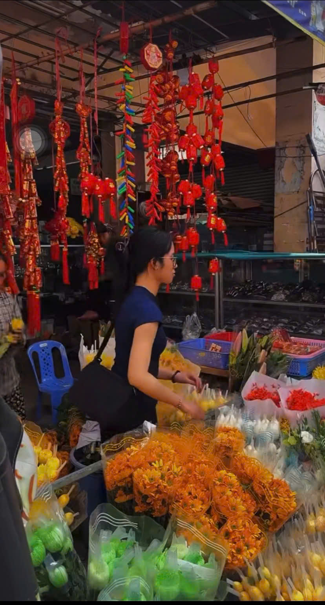

Một góc không khí chợ hoa rộn ràng và các gian hàng mứt ngày Tết.Bước vào chợ, điều đầu tiên dễ nhận thấy là màu sắc rực rỡ tràn ngập khắp nơi. Những cành mai vàng tươi khoe sắc, những chậu quất trĩu quả được đặt ngay ngắn thành hàng. Sắc vàng của hoa mai tượng trưng cho sự may mắn và thịnh vượng, khiến ai nhìn cũng cảm thấy ấm áp và hy vọng. Bên cạnh đó là những cành đào hồng thắm, những chậu hoa cúc vàng, hoa vạn thọ với ý nghĩa trường thọ và bình an. Tất cả tạo nên một bức tranh mùa xuân đầy sức sống và tươi mới.
Không chỉ có hoa, chợ Tết còn bày bán rất nhiều loại thực phẩm truyền thống. Những gian hàng bánh mứt đầy màu sắc thu hút đông đảo người mua. Các loại mứt dừa, mứt gừng, mứt me, mứt bí được sắp xếp gọn gàng trong các khay lớn. Mùi thơm ngọt ngào lan tỏa trong không khí, gợi lên cảm giác thân quen của ngày Tết. Bên cạnh đó là những đòn bánh tét được gói bằng lá chuối xanh, buộc lạt cẩn thận. Bánh tét không chỉ là món ăn truyền thống mà còn là biểu tượng của sự sum họp gia đình.
Âm thanh của chợ Tết cũng rất đặc biệt. Tiếng người bán hàng mời gọi vui vẻ, tiếng người mua trả giá, tiếng cười nói rộn ràng tạo nên một bầu không khí ấm áp. Không ai cảm thấy vội vã hay căng thẳng, mà thay vào đó là sự thoải mái và niềm vui. Những đứa trẻ đi theo cha mẹ, mắt mở to nhìn ngắm mọi thứ xung quanh, thỉnh thoảng đòi mua một món đồ chơi nhỏ hay một quả bóng bay đầy màu sắc.
Chợ Tết không chỉ là nơi mua bán, mà còn là nơi lưu giữ những giá trị văn hóa truyền thống. Người ta đến chợ không chỉ để mua đồ, mà còn để cảm nhận không khí xuân, để thấy lòng mình trở nên rộn ràng hơn. Những cái bắt tay, những lời chúc năm mới sớm được trao nhau, thể hiện tình cảm thân thiện và gắn bó giữa mọi người.
Khi rời khỏi chợ, trên tay mỗi người đều mang theo những món đồ cần thiết cho ngày Tết, nhưng quan trọng hơn là mang theo niềm vui và sự háo hức. Không khí chợ Tết đã góp phần làm cho mùa xuân trở nên ý nghĩa hơn. Đó là nơi báo hiệu một năm cũ sắp qua và một năm mới đầy hy vọng đang đến gần.